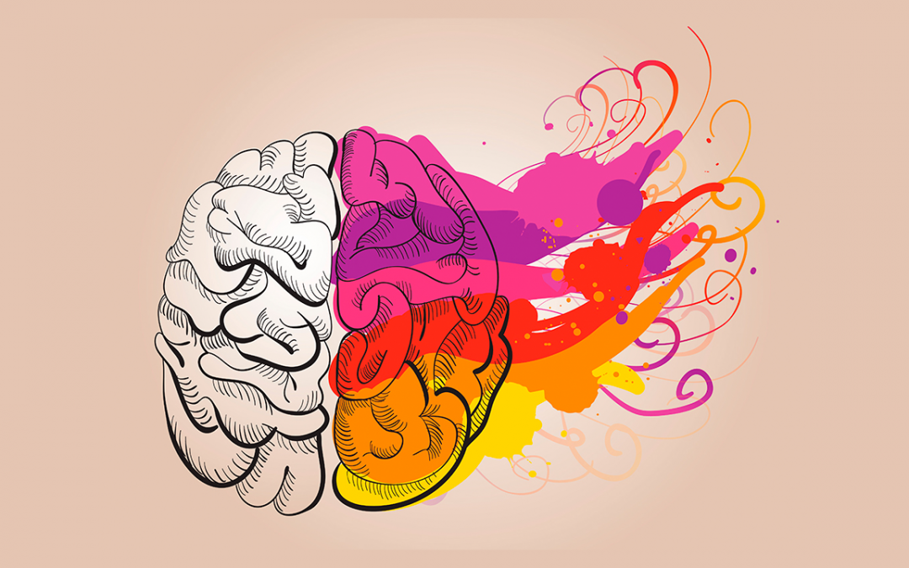

Você tem dificuldades com foco, atenção ou impulsividade?
Este é um teste baseado nos principais instrumentos clínicos usados por psicólogos para avaliar sinais de TDAH. Ele não substitui o diagnóstico, mas pode indicar se há sinais para procurar ajuda especializada.

Nossos Psicólogos Especializados

Dra. Ana Silva
Psicóloga Clínica
Especialista em TDAH em adultos e terapia cognitivo-comportamental
Agendar Consulta
Dr. Carlos Mendes
Neuropsicólogo
Especialista em diagnóstico e intervenção no TDAH em crianças e adolescentes
Agendar Consulta
Dra. Juliana Oliveira
Psicoterapeuta
Especialista em TDAH e transtornos de aprendizagem
Agendar Consulta